Deployment of Fingerprint BotD
BotD is an open source library that detects basic bots in a web browser. It detects the presence of automation tools and frameworks. Deployment of this BotD does not require any server as it runs 100% on the client.
// Initialize the agent at application startup.
const botdPromise = import('https://openfpcdn.io/botd/v1').then((Botd) => Botd.load())
// Get detection results when you need them.
botdPromise
.then((botd) => botd.detect())
.then((result) => console.log(result))
.catch((error) => console.error(error))
This JavaScript snippet is designed to integrate and utilize the BotD (Bot Detection) library provided by FingerPrint.
The script is responsible for asynchronously loading the BotD library, initializing the bot detection agent, and retrieving detection results, which can be used to identify and analyze bot activity on a web application.
Promises are used extensively to handle the asynchronous nature of module loading and bot detection. This ensures that each step (loading the module, initializing the agent, performing detection) completes before moving to the next step.
In the final workflow, a user visits the phishing link and must pass the Turnstile authentication to verify they are human. Next, FingerprintJS BotD checks are conducted to prevent bot traffic. Upon successful verification, the user is redirected to the phishing site where their ID and password are captured and stored in the database.
Deployment of Samuel’s code
- This set of code was written by Samuel, a senior student of IITM.
- It's designed to clean up data about web requests, like extracting dates and simplifying URLs.
- It has functionalities for conducting anomaly detection.
Dataset Used
- This is an open source dataset available in Kaggle of an Iranian ecommerce website zanbil.ir.
- Heading of the dataset are IP Address, User, Timestamp, Request, Status Code, Bytes Sent, Referrer, User Agent and an Unknown Field indicated mostly by “-”.
- This contains more than 1 crore samples.
Creating and Writing Database
- Initial step involves setting up the development environment by installing Go and Julia programming languages, along with their corresponding packages: DataFrame for Julia and SQLite for Go.
- Following the setup, we proceed with data preprocessing tasks. Initially, we access the specified access log file and compile a regular expression to extract pertinent information from each log line.
- Subsequently, we establish a connection to an SQLite database, "kaggleDataset.db," utilizing the go-sqlite3 driver. Within this database, we commence a transaction to facilitate batch processing of SQL statements.
- Next, we ensure the existence of a table named "parsed_data" within the database schema. This table encompasses columns to store IP addresses, requests, user agents, timestamps, status codes, and bytes sent.
- We then prepare a SQL query designed to insert parsed data into the "parsed_data" table. This query is instrumental in reading each line of the access log file, parsing it using the previously compiled regular expression, and subsequently inserting the parsed data into the database.
- Finally, to persist the changes made to the database, we commit the transaction. This encapsulates the entirety of the data preprocessing pipeline, enabling efficient storage and manipulation of pertinent log data for subsequent analysis and insights.
Data Processing Functions
We have four key functions designed for data processing:
- appendDate!(logs): This function enhances the DataFrame by incorporating a new column that extracts and appends the date component from a datetime column. For instance, it converts a timestamp like "2023-05-22 15:30:00" to a date format, "2023-05-22".
- normalizeRequests!(logs): Here, the focus is on standardizing the request data within the DataFrame. This might entail actions such as scaling numeric columns to a uniform range or converting categorical data into a consistent format. For example, it could ensure that all IP addresses are presented in a consistent case or format.
- removeMPrefix!(logs): This function targets the removal of a specific prefix, 'm', from designated fields or entries in the DataFrame. By doing so, it aids in data cleanup, transforming entries like "m12345" to "12345".
- removeRapidGrails(logs): This function filters out specific types of data entries or patterns deemed as noise or irrelevant. It's particularly useful for eliminating multiple rapid requests originating from the same IP address within a short timeframe, thus enhancing the overall quality of the dataset.
Data Analysis
Count_stats table
- This table encapsulates IP address frequency data, presenting the occurrence count of each IP address and facilitates the computation of rankings for individual IP addresses based on their frequency of occurrence.
- The occurrence of unusually high request rates or discernible patterns in accessing specific URLs within this dataset may suggest the presence of bot activity.
Transition table
- This involves traversing each row (request) within the provided DataFrame ip_requests.
- Subsequently, it constructs a weighted graph wherein each edge signifies a transition from one HTTP request to another, with the weight denoting the frequency of that transition.
- Two variables first_request and prev_req are initialized. first_request is set to true to indicate that the current request is the first one, and prev_req is set to nothing to indicate that there is no previous request yet.
- For the first request, it sets the ip and prev_req variables based on the IP address and request of the first row.
- For each subsequent request, it checks if it's the same as the previous request. If it is, it continues to the next iteration without updating the graph, as transitions from the same request to itself are not considered.
- If the current request is different from the previous one, it forms an edge from the previous request to the current one.
- The edges of this weighted graph are then sorted in descending order of their weights, utilizing Introsort, a hybrid sorting algorithm amalgamating quicksort, heapsort, and insertion sort.
- Upon sorting, the source node, destination node, and weight (frequency) of each edge are extracted from the sorted graph.
- Subsequently, a DataFrame named transition_table is generated, housing the source, destination, and weight columns.
- These columns encapsulate transitions occurring between HTTP requests, thereby providing a structured representation of the transition dynamics within the dataset.
- A dictionary named weighted_graph is initialized to store the weighted edges of the graph.
Why is this created
- This transforms raw web request logs into a structured format, which is pivotal in unveiling the navigation patterns of users as they interact with the website.
- Following the generation of the transition table, the subsequent step involves the creation of the 'anomaly_score_raw' table, which calculates an anomaly score for each IP address based on the count of rare transitions.
- This is done to pinpoint IP addresses exhibiting a high incidence of uncommon transitions, potentially indicative of anomalous behavior.
- Subsequently, the 'anomaly_ratio' table is created to calculate the normalized anomaly score for each IP address by dividing the raw anomaly score by the total number of edges.
- This is done to standardize the anomaly scores in relation to the overall activity observed, thereby furnishing a more discernible indicator of anomalous behavior adjusted for the individual activity levels of each IP address.
Overall architecture
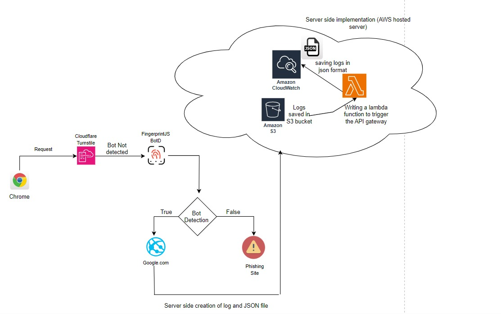
OAuth
What is OAuth?
Open Authorization is an open standard protocol for authorization of an application using user information. In general, it allows a third party application access to user related info like name, DOB, email or other required data from an application like Facebook, Google etc. without giving the third party app the user password.
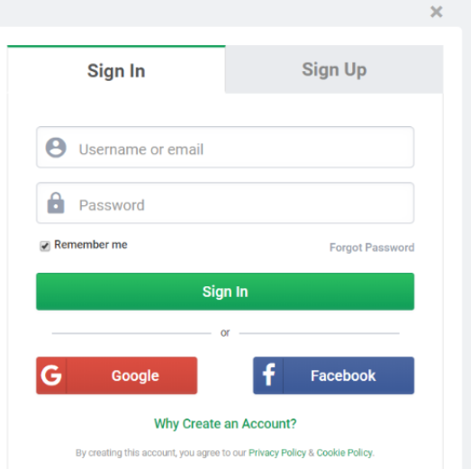Keycloak
- It is an open source Identity and Access Management solution.
- It offers features such as Single-Sign-On, Identify Brokering and Social Login, Client Adapters and Account Management Console.
- Some alternatives are Okta and Forgerock
Advantages:-
- Open source
- Easy customization - configurations
- JSON web token - easy to transfer
- OpenID and SAML support - standards for SSO
- Supports multiple identity provider
Installation and Setting
Keycloak can be installed from https://www.keycloak.org/downloads
In Keycloak 17 and later, the traditional standalone.sh script has been replaced with kc.sh. This script is used to manage the Keycloak server, including starting, stopping, and configuring the server.
This starts the Keycloak server in development mode. Development mode typically runs without HTTPS enabled, allowing for easier local testing without the need for SSL certificates and uses an in-memory database by default. This means all data is lost when the server stops. It's convenient for testing but not suitable for persistent storage needs.
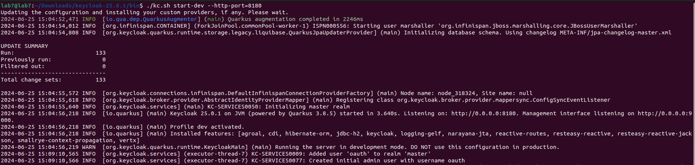 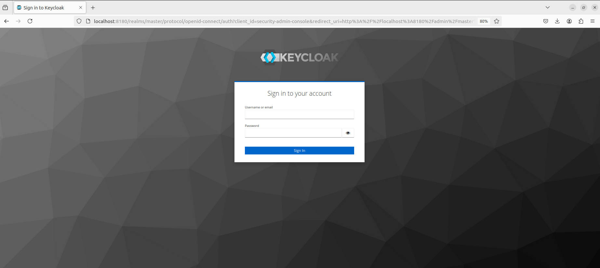Components of Keycloak
- Realm
- A realm in Keycloak acts as a management entity that controls a specific set of users, their credentials, roles, and groups.
- It allows for the isolation of data and configurations so that multiple organizations or applications can be managed independently within the same Keycloak instance.
- Clients
- Clients are entities such as applications or services that can request authentication from users.
- They initiate the authentication process and redirect users to Keycloak for login.
- Roles
- Roles in Keycloak serve as identifiers for the type or category of a user.
- They help define what actions a user is permitted to perform within the system by assigning permissions associated with specific roles.
- Users
- Users in Keycloak represent individual user accounts that can log in and interact with the system.
- Each user has a unique set of credentials used for authentication.
Access Token
What is an access token?
- An access token in OAuth (Open Authorization) is a credential that is used to authenticate and authorize API requests.
- Expiry date of the access token can be extremely low of the order of 30 seconds to 5 minutes.
Access Token is divided into
-
Opaque Token - 1d52703551c84012a7b0af0930092ea6
-
Structured Token (JWT)
Structure of JSON Web Token
// THIS IS THE BODY OF JWT WITHOUT HEADER AND SIGNATURE
{
"exp" : 1700941502,
"iat" : 1700941202,
"auth_time" : 1700941202,
"jti" : "47f9ecbc-f221-4228-acd9-df15f604cb5a",
"iss" : "http://127.0.0.1:9090/realms/oauthcourse",
"sub" : "2fc9115f-75c8-4eea-b1d3-3edd0f3598c2",
"typ" : "Bearer",
"azp" : "bugtracker",
"nonce" : "jvDZ6MnJ7NHJNY2LnuwEXoExnFnppd29ggGa50G0a3c",
"acr" : "1",
"scope" : "openid profile bugtracker.admin email",
"sid" : "15597759-7c5e-4941-945d-629ddf607403",
"email_verified" : false,
"name" : "John Doe",
"preferred_username" : "johndoe",
"given_name" : "John",
"family_name" : "Doe"
}
Architecture Diagram
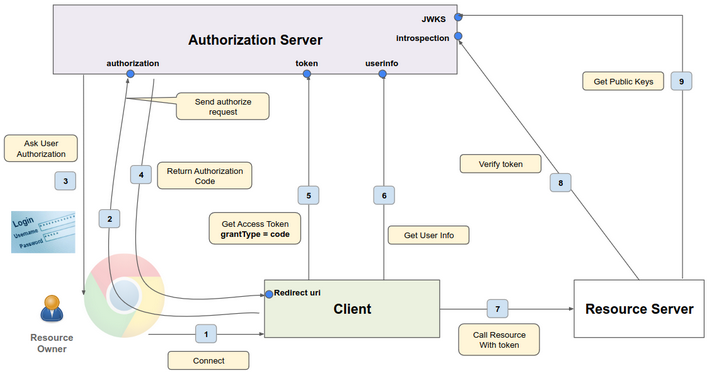Procedure
-
Main players in the diagram are resource owner, client, authorization server and resource server.
-
Here, user has already logged into the application that is, the client.
-
Now we call this resource API to get the resources associated with the resource owner.
-
We can think about the client as some image editing software.
-
The authorization server as the Google authorization server, and the resource server as the Google Photos API.
-
First, user or resource owner will send the request to connect to the resource server or get the photos of the resource owner.
-
So the client does not know what to do with this and so the client will send an authorized request to the authorization endpoint of the authorization server, asking for the permission to call the resource server on the user's behalf.
-
Authorization request is asking the authorization server to get that authorization from the resource owner.
-
Here, if the user has not already been authorized before, the authorization server will first ask for the user credentials and then specifically ask for permission.
-
Here, authentication is not for logging into our application as we have already logged into the application by other means.
-
The authentication here is only to allow the user to authorize the request to access the resource server.
-
After the resource owner approves it, the authorization server will send a short-lived authorization code (Order of 30s) to the client at its redirection Uri.
-
Also, to authorization server know the redirect Uri when the client was registered, we also provide redirect Uri as part of the registration, basically telling it where to send the authorization code when the authorization request comes in.
-
Client will then send a request to the token endpoint of the authorization server with a grant type of code, and specify the authorization code as part of that request, exchanging the authorization code for an access token.
-
In doing so, the client will have to specify the client ID and the client secret as well, because the authorization server needs to authenticate the client itself.
Why the authorization server does not send the access token directly to the client instead of sending the authorization code?
-
The reason for this is security.
-
The client is not dealing directly with the authorization server. There's a browser in the middle.
-
It's going through this browser and that makes it less secure.
-
This whole path via the browser is called the front channel and we do not want to expose our access token in that front channel.
-
That's why an authorization code is sent in the front channel and later on, this authorization code is exchanged with the access token in the back channel.
-
The back channel here being the direct communication between the client and the authorization server.
How does the Resource Server verify the token?
-
If the token is an opaque token, then the resource server will call the authorization server introspection endpoint to make sure that the access token is valid.
-
If the token is a JWT token, then the resource server can do the verification itself.
-
As a part of the verification, it will have to do some important checks the signature verification, the expiry time check and some other checks.
-
The resource server needs a set of public keys to verify the access token.
-
These public keys are provided by the authorization server (the server that issued the access token) through a special endpoint called the JWKS (JSON Web Key Set) endpoint.
-
The access token has three parts: header, payload, and signature.
-
The header of the access token includes a reference to which public key was used to sign the token. This reference is called the Key ID (KId).
-
The resource server looks at the KId in the token's header.
-
It then finds the corresponding public key from the list of public keys retrieved from the JWKS endpoint.
-
Once the correct public key is identified, the resource server uses this key to verify the token's signature.
-
If the signature is valid, the token is considered authentic and the resource server can trust the claims (like user identity and permissions) in the token's payload.
Does that mean that we have to go through this entire process to get an access token every five minutes?
No, here comes the refresh token. If the access token has expired, the client can make a call to the token endpoint again with a grant type of refresh token to get another access token.
A refresh token has a much higher expiry time, at least until the web session ends - let's say 30 minutes.
Limitations
- This architecture works great if the client or the application is on the back end.
- When the client is running inside the browser or a mobile application, it is considered a "public client".
- This means it cannot safely store secrets because the client-side environment (browser or mobile app) can be accessed and potentially manipulated by end-users.
- To address this issue, the OAuth 2.0 protocol has an extension called PKCE (Proof Key for Code Exchange).
Bug Tracker Application
Bug tracker application is going to be a spring boot application, which supports the functionality of an OAuth client.
This bug tracker application runs on port 8080
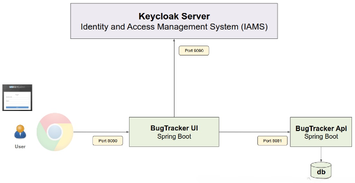There are two phases of Bug Tracker application - Bug Tracker UI and Bug Tracker API
-
The UI will be handled by the bug tracker UI application. This is the Spring Boot Controller class, and all the Http requests are first routed to this controller.
-
Any business logic related to the bug tracking will actually be moved to the Bug Tracker API project. The bug tracker API itself will be a Spring Boot Resource server.
As of now, we do not have a database. Everything which is created will be stored in memory within the bug tracker service object.
Essentially, the bug tracking service will act like an in-memory database.
Demonstration
Logging onto the localhost:8080, we will be redirected to Keycloak login screen
How did that happen?
The URLs in this application are protected.
So the application immediately started the authorization code flow, which means it redirected to the keycloak authorization server, because that's the way it is set up in spring Boot.
Log in using one of the users that we created.
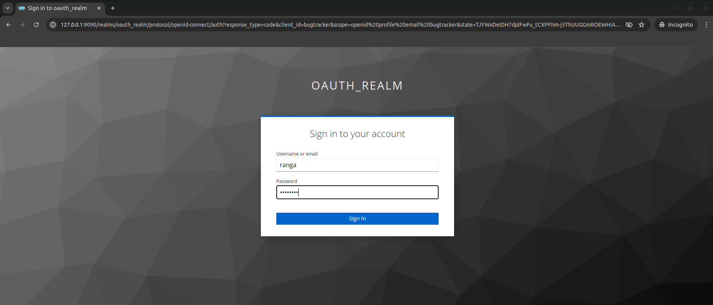When logged in, we'll see the following homepage.
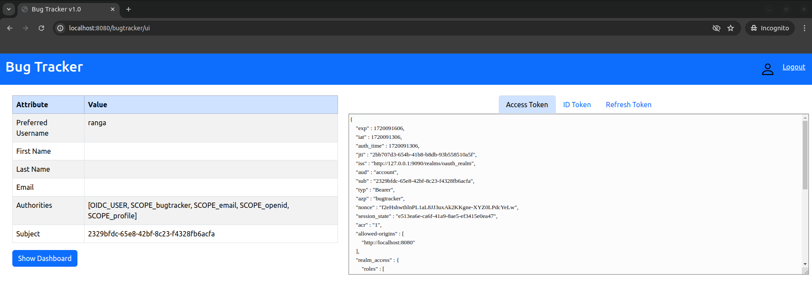Subject is a unique identifier for the user assigned by Keycloak.
Authorities is spring security specific, which basically maps directly to the privileges in the application.
On the right, lies the tokens. Only the body of the token is displayed, not the headers.
In practical use, we don't display these tokens due to security reasons.
Global Logout
On the right top corner, we could see a logout button. Clicking on logout button, will get us back to keycloak login screen.
This is a global logger, allowing us to not only log out from the application and destroy the session along with cookie removal, it also sends a redirect message to Keycloak to log out from Keycloak as well.
So next time when we try to access the application, we will see the login screen.
Spring Security - OAuth Authentication
server.port=8080
# Use this pattern to show reduced log width
logging.pattern.console= %d{HH:mm:ss} [%15thread] %msg%n
logging.level.web=TRACE
logging.level.org.springframework.web.client=TRACE
# KeyCloak specific OAuth 2 related properties
spring.security.oauth2.client.registration.keycloak-oidc.provider=keycloak
spring.security.oauth2.client.registration.keycloak-oidc.client-name=bugtracker
spring.security.oauth2.client.registration.keycloak-oidc.client-id=bugtracker
spring.security.oauth2.client.registration.keycloak-oidc.client-secret=VNGk0BtyvKfdwwd8efcjdzr8YisJSEEL
#spring.security.oauth2.client.registration.keycloak-oidc.client-authentication-method=none
spring.security.oauth2.client.registration.keycloak-oidc.authorization-grant-type=authorization_code
spring.security.oauth2.client.registration.keycloak-oidc.scope=openid,profile,email
# This represents the Keycloak Provider (issuer is enough for Spring Boot to know all endpoints)
# Openid configuration - http://127.0.0.1:9090/realms/oauthrealm/.well-known/openid-configuration
spring.security.oauth2.client.provider.keycloak.issuer-uri=http://127.0.0.1:8080/realms/oauth
-
Here, we see all the configuration which sets up the application to use Spring Security with Keycloak for OAuth 2.0 authentication, enabling detailed logging for web-related operations and configuring the server to run on port 8080.
-
There are also a bunch of settings related to logging. TRACE is the most detailed logging level, providing extensive information for debugging purposes.
-
Next comes the OAuth 2 related properties specific to Keycloak like client ID, the client secret, the scopes, and the grant type which can be seen in the Clients section of Keycloak server.
-
Last is the location of the provider- keycloak. The only thing necessary is the issuer here which can be found in OpenID endpoint configuration link.
Why?
Knowing the issuer, the spring boot can calculate the .well-known/openID-configuration, and from there it can find out all of the endpoints of Keycloak server.
Authorization Code Grant
Open an incognito window along with the developer console.
Reason for using incognito is the application of an administrator logged in another window.
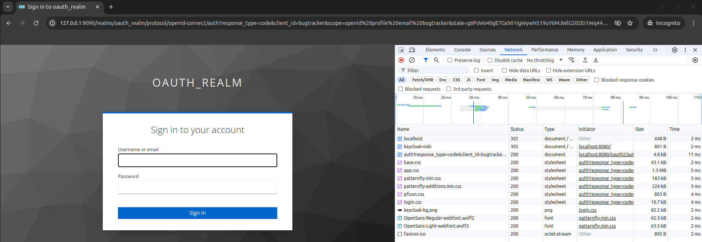When we try to open the Bug tracker application, it redirects us to the login page of Keycloak
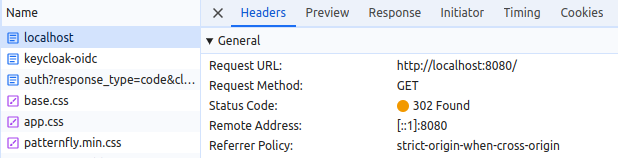On the right, we can see this is the request that we sent to the application and there is a 302 not found, which is basically a redirect request.
So it is redirected to Keycloak Oidc.
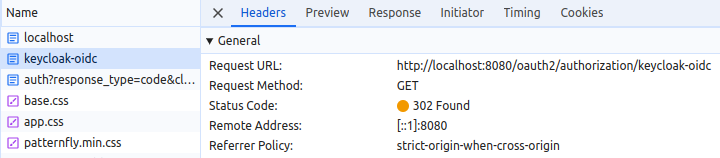So when we click that, we'll see the request to keycloak-oid.
That is the login request and recognizes that it has to go to Keycloak.
That's why there's a 302 not found and needs to be redirected again.
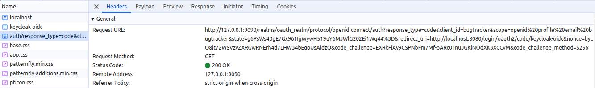Here, in the authorized endpoint, we can see the correct authorization endpoint, response type, client ID and so on.
For additional security, a randomly generated state parameter is also sent.
We will see that state parameter again when the response is returned later, because those need to match.
Nonce is part of the OpenID specification and that's also a randomly generated ID.
When we get the access token, ID token and refresh token, we will see the nonce embedded inside those tokens.
It should match what was sent as part of the authorized request. If not, the response should be rejected.
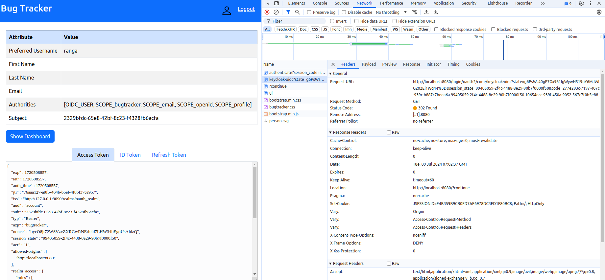After signing into the application, state parameter that was sent as part of the request is matched here in the redirect URL.
Also, we get the authorization code from this URL, which will go to the token request and get the ID token, the access token and the refresh token.
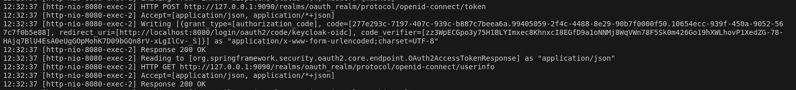From the log data, we can see a token request being sent with authorization code, and then the code being sent as part of the token request to actually get the token.
Proof Key for Code Exchange
What is the necessity to use PKCE?
The primary issue with authorization code grant type for public clients is the case where a malicious user intercepts the authorization code and somehow knows about the client ID and secret, then that user can use the token endpoint to get an access token, effectively hacking into the resource API.
Since the client secret is not secure for public clients and can be easily obtained by an attacker, relying on it provides no real security.
Proof Key for Code Exchange
-
Client generates a random code verifier string
- Unique for that authorized request
- Min = 43 chars and Max = 128 chars
- Random and impractical to guess
-
Once the code verifier is generated, the client generates the code challenge from the code verifier
code_challenge = BASE64URL-ENCODE(SHA256(ASCII(code_verifier)))
- Most importantly, we can go from code verifier to code challenge, but not vice-versa due to the inability to get to the original data from hashed SHA256 data.
This is the same diagram with minor changes when the user clicks on the connect button and just before the authorized request is sent, the client will generate this random code verifier.
-
The code challenge is created and is sent as part of the authorized request, as part of request 2.
-
The authorization server will generate an authorization code and return the authorization code as part of request 4 as before, but the authorization server will also associate the code challenge with the auth code.
-
Now, when the client sends a token request, it will also send the code verifier.
-
The authorization server will then convert the code verifier to the code challenge using the same Sha256 algorithm.
-
If the code challenge matches with that sent as part of 2, then the authorization server knows that the request is legitimate and it returns the token back.
Code verifier acts like a dynamic secret, only for that particular authorized request for the next authorization request, a different code verifier will be generated by the client.
Using a library like Spring Boot, code verifier and code challenge are automatically generated.
PKCE is recommended for confidential clients as well. When used with confidential clients, the token request would be sent with the client secret as well as the code verifier.
Bug Tracker with PKCE
Since we know that PKCE was originally designed so that public clients could use a Code verifier, we are disabling the Client configuration option to make it a public client.
We also select the option of consent required, requiring the user to actually authorize the request.
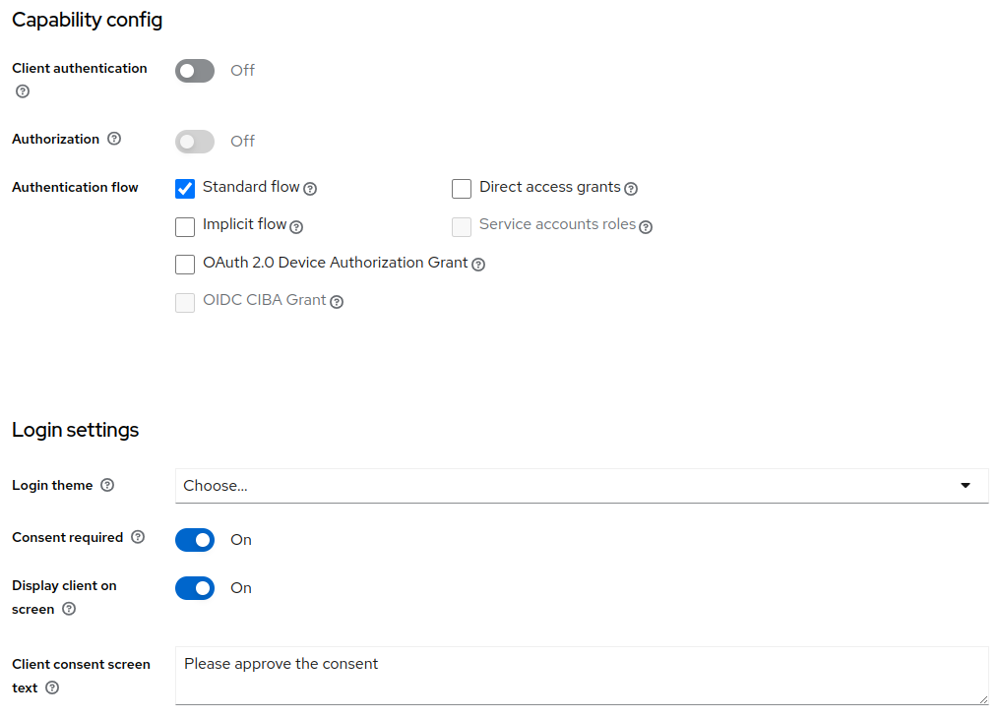Also, select the PKCE challenge method as S256 and save it.
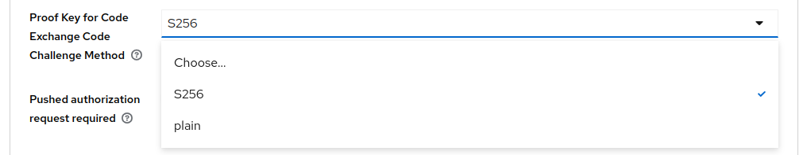We don't need client secret because there is no client secret again. But we will need a client authentication method as none.
This is basically telling Spring Boot that this is a public client.
# KeyCloak specific OAuth 2 related properties
spring.security.oauth2.client.registration.keycloak-oidc.provider=keycloak
spring.security.oauth2.client.registration.keycloak-oidc.client-name=bugtracker
spring.security.oauth2.client.registration.keycloak-oidc.client-id=bugtracker
# spring.security.oauth2.client.registration.keycloak-oidc.client-secret=VNGk0BtyvKfdwwd8efcjdzr8YisJSEEL
spring.security.oauth2.client.registration.keycloak-oidc.client-authentication-method=none
spring.security.oauth2.client.registration.keycloak-oidc.authorization-grant-type=authorization_code
spring.security.oauth2.client.registration.keycloak-oidc.scope=openid,profile,email
Accessing the application we can see that the code challenge being sent as well as the code challenge method.
This is a sign that PKCE is working.
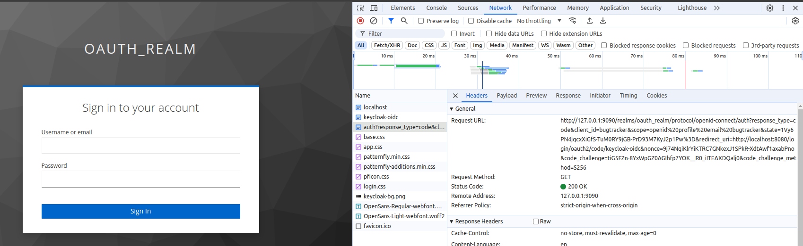It is now asking for authorization and then clicking yes will direct us to home page.
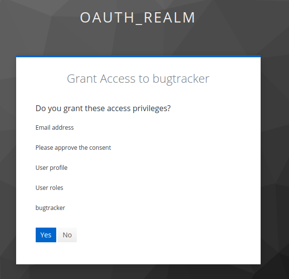Code verifier is displayed in the request url and in the console logs as shown below
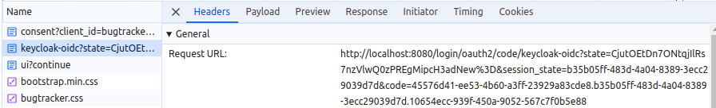It sent a Post request to token out here and then we see the code verifier being sent.
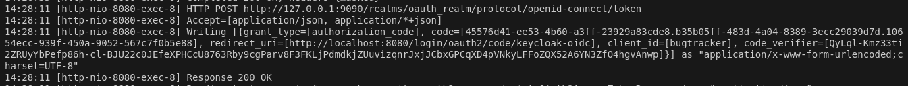This indicates that PKCE is working great.
BugTracker Authorization using Roles
- Not all authorization servers are made equal. Keycloak is provided with the ability to map roles to scopes.
- This enables us to use scopes in enterprise applications without making changes to Spring Boot's default handling of scopes.
- Authorization servers like Okta do not support this mapping.
By default, Spring Boot simply takes what is there in the scope claim and creates an authority by prefixing it by scope underscore.
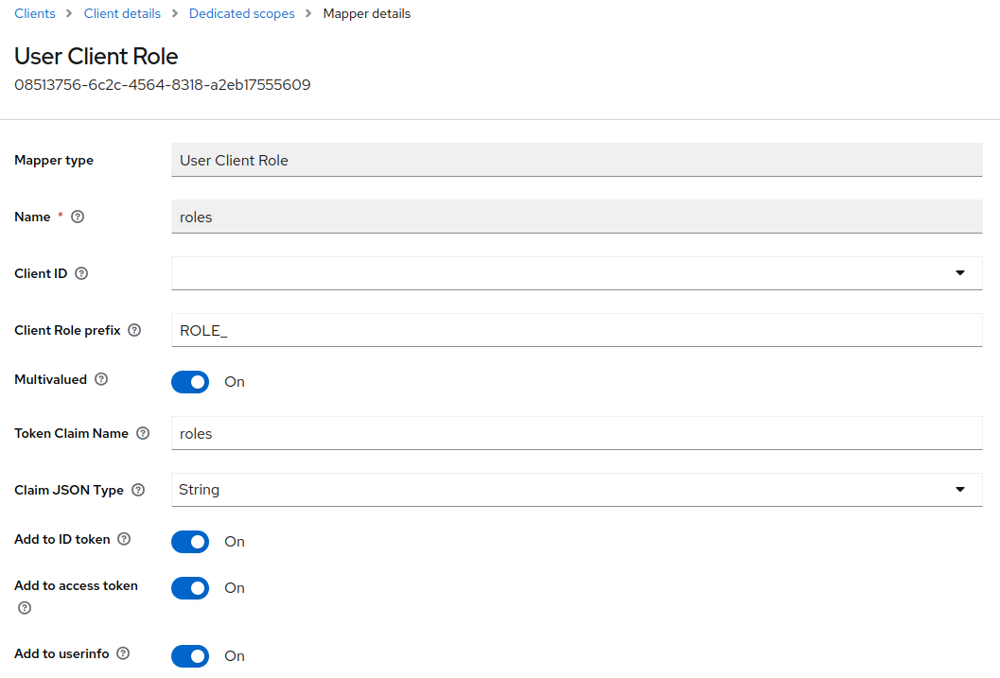Instead of Anyauthority, we assign Anyrole and remove the ROLE_ prefix before each role assigned before.
@Bean
public SecurityFilterChain filterChain(HttpSecurity http)
throws Exception {
http
.authorizeHttpRequests(authorize ->
authorize
.requestMatchers("/bugtracker/ui").authenticated()
.requestMatchers("/bugtracker/ui/admin/**").hasAnyRole("bugtracker.admin")
.requestMatchers("/bugtracker/ui/**").hasAnyRole("bugtracker.admin", "SCOPE_bugtracker.user")
.anyRequest().authenticated())
We can remove two bug tracker admin and user scopes.
Now, if we login through any of the user, we find that the scope is not included. Only openid, email and profile
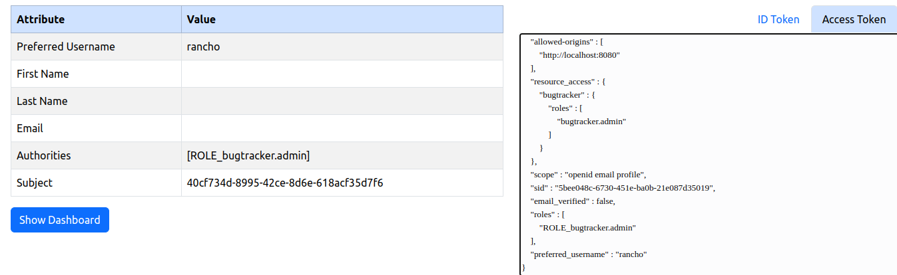